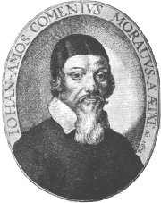

Kostel sv. Vavøince, Jablonné v Podještìdí

Jan Brokof: Jan Nepomuckı
|
ÈESKÉ BAROKO
Po Bílé hoøe museli èeští protestanti opustit habsburskou øíši, nebo pøestoupit ke katolicismu. Øada šlechtickıch rodù pøišla o majetky ve prospìch cizích šlechticù vìrnıch císaøi. Masivnì se rozšíøilo nevolnictví a robota.
Zároveò vznikla øada cennıch umìleckıch památek. Nejvıznamnìjšími barokními architekty byli Kryštof a Kilián Ignác Dientzenhoferové (malostranskı Chrám sv. Mikuláše, Loreta) a tvùrce tzv. barokní gotiky (kladrubskı klášter, kostel v Sedlci, kaple sv. Jana Nepomuckého na Zelené hoøe) Jan Blaej Santini (1677-1723). Matyáš Bernard Braun (1684-1738) je autorem alegorickıch soch ctnostní a neøestí v Kuksu. Jan a Ferdinand Maxmilián Brokofové osadili sochami svìtcù Karlùv most. Svìtového vìhlasu dosáhli malíøi Karel Škréta (1610-1674), Jan Kupeckı (1667-1740), Petr Brandl (1668-1735) a Václav Vavøinec Reiner (1689-1743). Grafik Václav Hollar (1607-1677) pùsobil v Anglii. Na venkovì se rozvíjí tzv. selské baroko (Holašovice) a lidová tvorba.

Jaromìøice nad Rokytnou
|
Historie
Prohra v bitvì na Bílé hoøe (1620), poprava vùdcù stavovského povstání na Staromìstském námìstí (1621), vydání Obnoveného zøízení zemského (1627) a Vestfálskı mír (1648) uvrhly èeské zemì do zcela podøízeného postavení v habsburské monarchii. Tøicetiletá válka, hladomory a nedobrovolné odchody do exilu zdecimovaly populaci (V Èechách a na Moravì klesl poèet obyvatel o celı milion).

Santiniho Kaple sv. Jana Nepomuckého na Zelené hoøe
Jan Nepomuckı byl svatoøeèen v 18. stol. Okamitì se stal oblíbenım èeskım patronem. Santini mu vystavìl kapli na Zelené hoøe. Co dalšího o tomto svìtci víš?
|
Oficiální katolická tvorba

|
Oficiální katolická tvorba
Èeské umìní, školství i vìda se staly nástrojem rekatolizace a brzy je ovládli jezuité. Antonín Koniáš (1691-1760) sepsal Klíè kacíøské bludy k rozeznání otevírající, k vykoøenìní zamykající, co byl seznam zakázanıch knih (sám jich nechal spálit pøes 30 000). Jezuity byli také pøední spisovatelé Bedøich Bridel, Bohuslav Balbín, Jan Koøínek nebo Felix Kadlinskı, autor sbírky Zdoroslavíèek v kratochvilném hájièku postavenı.
Velmi oblíbené byly duchovní písnì (Narodil se Kristus Pán) i homiletická literatura – mezi vıznamné kazatele patøili
Matìj Václav Šteyer (Postila katolická) a
Bohumír Hynek Josef Bílovskı (Cantator cygnus, to jest Hlas duchovní labutì).
|
Braun: Poustevník Garinus (Betlém u Kuksu)
|
Bedøich (Fridrich) Bridel
(1619-1680)
Bridel byl jezuitskı misionáø. Pùsobil jako profesor rétoriky a poetiky, mìl na starost tisk pastoraèních knih v praském Klementinu. Byl pilnım pøekladatelem a sám psal latinsky i èesky – Jeslièky (kancionál), ivot svatého Ivana (legenda) a Co Bùh? Èlovìk? (báseò). Zemøel na mor, kdy ošetøoval nemocné v Kutné Hoøe.
Jak se ti líbí ukázka z Bridelovy básnì?
|
Bedøich Bridel: Co Bùh? Èlovìk?
Rozsáhlá básnická skladba Co Bùh? Èlovìk? je vrcholem èeské barokní poezie. Bridel v ní srovnává Boí velikost s vlastní nicotností.
|

|

Svatı Ivan drí v ruce køí, kterı mu daroval Jan Køtitel na ochranu proti démonùm.
|
Bedøich Bridel: ivot svatého Ivana
V Bridelovì legendì o sv. Ivanovi se støídají pasáe psané prózou i veršem. Ivan byl prvním èeskım poustevníkem. Charvátskı princ se nejprve rozhodl pro ivot v mnišském rouchu, ale pozdìji odešel do pohanskıch Èech a usadil se v jeskyni uprostøed pustého lesa. Spoleènost mu dìlali pouze démoni, kteøí ho neúspìšnì pokoušeli, a laòka, její mléko pil. Tu ale zasáhl pøi lovu kníe Boøivoj.
|
Vìøící sice uctívali Ivana jako svìtce, ale oficiálnì kanonizován nebyl.
Na místì jeho jeskynì vznikl klášter Svatı Jan pod Skalou.
Jak probíhalo Ivanovo støetnutí se zlımi mocnostmi?
|
Adam Michna z Otradovic
(17. století)
Hudební skladatel a básník Adam Michna z Otradovic byl varhaníkem v Jindøichovì Hradci. Je autorem sbírek Èeská mariánská muzika (mariánské písnì), Loutna èeská (suita) a Svatoroèní muzika (písnì o svìtcích).

Praská Loreta
|
Adam Michna z Otradovic:
Èeská mariánská muzika
Èeská mariánská muzika je sbírka duchovních písní. Obsahuje skladby o Jeíši (vánoèní i velikonoèní), Pannì Marii (mariánské) a o umírajících a zemøelıch (prosebné). Jeliko to byly písnì, nemohl v pùvodním tisku chybìt jejich notovı zápis.
|
Titulní list Èeské mariánské muziky
Zazpívejte si nìkterou z Michnovıch písní.
|
Jan Koøínek (1626-1680)
Alegorie hornictví z Koøínkovıch Starıch pamìtí kutnohorskıch
|
Jan Koøínek: Staré pamìti kutnohorské
Staré pamìti kutnohorské pojednávají pøedevším o havíøích a hornictví. Obsahují zajímavé údaje o Kutné Hoøe i jejích dìjinách a do roku 1614. Nìkteré èásti jsou veršované nebo mají podobu dialogu. Autor si dobøe osvojil hornickou mluvu (souèástí knihy je slovník havíøského slangu). Velmi tendenèní jsou pasáe o husitech. Koøínek je pomlouvá, zesmìšòuje a pøekrucuje historickou skuteènost.
|

Škréta: Ignác Jetøich Vitanovskı z Vlèkovic
Která ukázka z Koøínkovy knihy tì zaujala nejvíce?
Charakterizuj jednotlivé ukázky z ánrového hlediska.
|
Bohuslav Balbín (1621-1688)

Bohuslav Balbín

Praská defenestrace z 23. 5. 1618 od Matthäuse Meriana
|
Bohuslav Balbín
Balbín byl jezuitskı misionáø a uèitel, ale po 13 letech musel vıuky z nejasnıch dùvodù zanechat. Je autorem latinskıch knih Vıtah z dìjin èeskıch, Rozmanitosti z historie Království èeského (Svaté Èechy, Uèené Èechy...), Nástin humanitních disciplin a O šastném nìkdy, nyní však pøealostném stavu království èeského, zvláštì pak o vánosti jazyka èeského èili slovanského v Èechách, té o záhubnıch úmyslech na jeho vyhlazení a jinıch vìcech k tomu pøíslušejících rozprava krátká, ale pravdivá. Toto dílo, známìjší jako Obrana jazyka èeského, bylo adresováno moravskému kronikáøi Tomáši Pešinovi z Èechorodu, kterı (na rozdíl od Balbína) psal èesky. Poprvé vyšlo a v roce 1775 pod latinskım názvem Rozprava na obranu jazyka slovanského, zvláštì èeského, kterı mu dal obrozenec František Martin Pelcl. Èesky vyšla Obrana o dalších sto let pozdìji...
|
Alegorická mapa Èech v podobì rùe se nachází v Balbínovıch Rozmanitostech z historie království èeského. Rytinu vytvoøil Kristián Vetter podle obrazu Pavla Aretina z Ehrenfeldu.
Porovnej jednotlivé ukázky.
Co je obsahem jeho Obrany?
Souhlasíš s Balbínovımi názory?
Kteøí autoøi rovnì vylíèili osudy Jana Nepomuckého? V èem se jejich zpracování liší?
|
Exulantská tvorba protestantù
Hollar: Pohled na Prahu
|
Exulantská tvorba protestantù
Nekatolíci nacházeli útoèištì v protestantskıch zemích (Anglie, Nizozemí...). Nedobrovolnı odchod z vlasti ale silnì poznamenal jejich tvorbu. Vìtšina knih exulantù se ocitla v Koniášovì Klíèi. Pøesto se tajnì pašovaly do Èech, kde zùstávali tajní nekatolíci. Do exilu musel odejít èlen jednoty bratrské Jan Amos Komenskı, novoutrakvista Pavel Stránskı ze Zap, autor latinského pojednání O státì èeském (èesky vyšlo a v roce 1893), nebo luterán Pavel Skála ze Zhoøe (Historie církevní).
|

Jan Amos Komenskı
|

Komenskı mìl velmi pohnutı osud. Narodil se nedaleko Uherského Brodu (Nivnice), ale brzy osiøel. Po studiích v Herbornu a Heidelberku pùsobil jako uèitel a duchovní jednoty bratrské ve Fulneku, odkud utekl do Pøerova, kde jeho první ena i oba synové zemøeli na mor. V roce 1628 musel odejít do polského Lešna. Stává se posledním biskupem jednoty bratrské a jako uznávanı reformátor školství pùsobí v rùznıch protestantskıch zemích. Pøi poáru Lešna (1656) pøišel o veškerı majetek, vèetnì rozepsanıch rukopisù. Psal latinsky i èesky (Labyrint svìta a ráj srdce), pøedevším spisy vıchovné a náboenské. Pochován je v nizozemském Naardenu.
Orbis sensualium pictus
|
Jan Amos Komenskı:
Labyrint svìta a ráj srdce
Alegorická skladba Labyrint svìta a ráj srdce vypráví o hledání místa ve svìtì a cestì k Bohu. Poutník prochází zvláštním mìstem (labyrintem svìta). Doprovází ho Všezvìd Všudybud, kterı mu nasadí uzdu z Všeteènosti a Urputnosti, a Mámení, od nìho dostane brıle z Domnìní a Zvyku. Poutník pozoruje rùzné stavy (øemeslníci, uèenci, duchovní, vrchnost...) i povolání (námoøníci, právníci, novináøi...), ale ádné z nich se mu nezamlouvá. Setkává se s královnou Moudrostí a jejím neúspìšnım nápadníkem Šalomounem a nakonec i s Jeíšem Kristem, od kterého definitivnì pøijímá novou uzdu a brıle. Poutník nenašel ráj srdce v tomto svìtì, ale ve víøe.
Jan Amos Komenskı: Didactica magna
Jan Amos Komenskı se podílel na reformì školství v Anglii, Švédsku, Uhrách a Nizozemí, proto bıvá nazıván uèitelem národù. Vıchova pro nìj byla prostøedkem k nápravì svìta. Škola má bıt dílnou lidskosti, vıuka musí bıt názorná a pøimìøená vìku ákù, mùe vyuívat i divadlo (Škola hrou). Uèitel by mìl postupovat od jednoduššího ke sloitìjšímu.
Další knihy Jana Amose Komenského
Náboenské: Listové do nebe, Truchlivı, Kšaft umírající matky jednoty bratrské, Kancionál; všenápravné: Via lucis (Cesta svìtla), De rerum humanarum emendatione consultatio catholica (Obecná porada o nápravì lidskıch vìcí, tzv. Všenáprava); nauèné: O poezii èeské; pedagogické: Janua linguarum reserata (Brána jazykù otevøená), Dvéøe jazykù otevøené, Linguarum methodus novissima (Nejnovìjší metoda jazykù), Didactica, to jest Umìní umìlého vyuèování (vyšlo a roku 1849), Schola ludus (školská dramata), Informatorium školy mateøské.
|
Takto nakreslil labyrint svìta sám Jan Amos Komenskı. Najdi na obrázku mìsta Bránu ivota, Bránu rozchodu, ulice šesti stavù, hrad Štìstí, námìstí a sídlo Moudrosti.
Uèebnice Orbis senzualium pictus (Svìt viditelnıch vìcí v obrazech) se skládá z obrázkù s oèíslovanımi popisky v rùznıch jazycích. Pouívali ji i èeští jezuité.

Braun: Moudrost
Se kterımi názory Komenského souhlasíš a se kterımi nesouhlasíš? Proè?
V èem se liší souèasná vıuka od poadavkù Komenského?
Co chceš ve své škole zmìnit? Proè?
Popiš nebo nakresli, jak si pøedstavuješ ideální „školu snù“.
|
Písmáci
Alternativou k oficiální katolické literatuøe byla tvorba tzv. písmákù, napøíklad uèitele Václava Františka Kocmánka (1607-1679) nebo rychtáøe Františka Jana Vaváka (1741-1816), autora Pamìtí.

Selské stavení v Holašovicích
|
Tvorba pololidová
Václav František Kocmánek nechtìl opustit Èechy, a proto konvertoval ke katolicismu. Tento vzdìlanı mìšan pùsobil jako kantor a regenschori v Praze. Psal básnì o tìkém ivotì selského lidu, kterı trpìl válkami (Lamentatio rusticana), morem, nevolnictvím i robotou. Kromì toho je autorem skladeb historickıch (Píseò o smrti Albrechta z Valdštejna), divadelních her a interludií (O sedlském hòupu chtìjícím ákem bıti).
V této skladbì je ukrytı text Otèenáše. Pøeèti ho.
|

Sloup Nejsvìtìjší Trojice v Olomouci
Jaké stráznì Kocmánek líèí?
Kdo je jejich pùvodcem?
|
Barokní èeština
Abeceda z Komenského knihy Orbis senzualium pictus
|
Barokní èeština
Barokní èeština byla vırazovì velmi bohatá. Autoøi èerpali slovní zásobu ze všech slohovıch vrstev. S oprávnìnou kritikou se setkala tzv. alamodová poezie – pøejemnìlá a plytká literatura plná módních slovíèek. V mládí se jí vìnoval Václav Jan Rosa (Discursus Lypirona, to jest smutného kavalíra de amore aneb o lásce...), jinak autor mluvnice Èechoøeènost. Jazykoví puristé naopak usilovali o èistotu jazyka. Komenského snaha sestavit kompletní latinsko-èeskı slovník Poklad jazyka èeského vzala za své pøi poáru Lešna, vydal tedy pouze sbírku pøísloví. Zajímavı je spis Matìje Václava Šteyera
Vıbornì dobrı zpùsob, jak se má po èesku psáti neb tisknouti. V obrovském nákladu vycházely pøeklady katechismù,
modlicích kníek (Zlatı nebeklíè) a Písma (Bible svatováclavská).
|
Poznámka: Názvy barokních dìl jsou velmi dlouhé (uvádìjí struènı obsah knihy i rok vydání), a proto se èasto zkracují. Nìkteré tvary slov mohou na souèasné ètenáøe pùsobit nespisovnì, protoe se èeští obrozenci vrátili k renesanèní èeštinì a pøeskoèili tak nìkolik staletí pøirozeného vıvoje jazyka.
|
Internetové stránky
Adam Michna, písnì
Kocmánek, Šteyer, barokní hry atd.
Vìènı pekelnı altáø, Manni, Šteyer
Sláva barokní Èechie, vıstava
Selské baroko, prezentace
Holašovice, UNESCO
Habsburkové, informace
Bridel, informace
Bridel, informace
Balbín, informace
Balbín: Obrana
Sochy na vyhynutí, Kuks
Labyrint Project
Hollar, reprodukce
Hollar: Ezopovy bajky, ilustrace
Karlùv most, sochy
Sv. Jan Nepomuckı
Fantastièno v textech barokního kázání
Mapa Èech v podobì rùe
Komárek: Loreta, èlánek
Vlnas: (Svatı) Jan Nepomuckı, èlánek
Exkurze
Karlùv most, sochy
Kuks, zámeckı areál
Lapidárium, sochy
Klášter sv. Jiøí, obrazy
Muzeum J.A.Komenského
Pedagogické muzeum
Sedlec, kostel a kostnice
Klementinum, knihovna
Kladruby, klášter
Svatá hora, Pøíbram
|
Doporuèená èetba
Balbín, Bohuslav: Krásy a bohatství èeské zemì, pøel. H.Businská, Panorama, Praha 1986
Dílo Jana Amose Komenského (18 svazkù) Academia
Dìjiny èeského vıtvarného umìní II, Od poèátku renesance do závìru baroka
Durych, Jaroslav: Bloudìní, Rekviem (romány o Valdštejnovi)
Durych, Jaroslav: Sluebníci neuiteèní (román o jezuitech)
Bridel, Fridrich: Básnické dílo, Torst, Praha 1994
Jirásek, Alois: Psohlavci, Skaláci, Skály, Temno, (historické prózy)
Komenskı, Jan Amos: Labyrint svìta a ráj srdce
Komenskı, Jan Amos: Obecná porada o nápravì vìcí lidskıch (3 svazky), Svoboda
Koøínek, Jan: Staré pamìti kutnohorské
Kratochvil, Antonín: Oheò baroka, Cesta, Brno
Kuèera, Rak: Bohuslav Balbín a jeho místo v èeské kultuøe, Vyšehrad, Praha 1983
Kumpera, Jan: Jan Amos Komenskı
Malı svìt jest èlovìk aneb Vıbor z èeské barokní prózy
Polišenskı, Josef: Komenskı, Mu labyrintu a nadìje
Rùe, kterou smrt zavøela, Vıbor z èeské poezie barokní doby, Odeon, Praha 1970
Skála ze Zhoøe, Pavel: Historie èeská, Od defenestrace k Bílé hoøe
Tichá, Zdeòka: Adam Václav Michna z Otradovic, Melantrich, Praha 1976
Vašica, Josef: Èeské literární baroko, Atlantis, Brno 1995
Vítr jest ivot èlovìka aneb ivot a smrt v èeské barokní próze, H&H, Praha 2000
Vlnas, Vít: Jan Nepomuckı, èeská legenda, Mladá fronta, Praha 1993
Vybrané spisy J.A.Komenského (8 dílù), SPN
Winter, Zikmund: Mistr Kampanus (historickı román)
|
Pøiprav si referát o nìkteré z uvedenıch knih nebo internetovıch stránek.

Brandl: Sv. Jáchym a Anna

Vızdoba kaple v Sedlci u Kutné Hory
Které barokní stavby znáš?
|
|